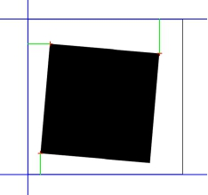
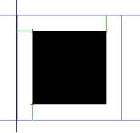

与其他对象目标对位计算工具直接给定目标位置不同，最优化距离对位计算工具依据给定的数个点与数条直线，通过最优化点与对应直线的距离来计算目标位置，使得最终对位后的点到直线距离与给定的标准距离最为近似。如图1(a)所示，绿色线条代表三个平台点分别到对应直线的距离，当设定标准距离（这里以标准距离一致为例）后，对位后的结果如图1（b）。

| 分类 | 参数名称 | 参数描述 |
|---|---|---|
| 属性窗口 | 是否输入圆弧 | 用于设置参数链中是否需要链接圆弧数据，默认值为“否” |
| 图像窗口 | 无 | 无 |
| 数据链 | 距离对位对象点坐标向量 | 距离对位模式下对象点平台坐标组成的向量。 |
| 距离对位目标直线向量 | 距离对位模式下平台坐标下目标直线组成的向量。 | |
| 距离对位目标圆弧向量 | 距离对位模式下平台坐标下目标圆弧组成的向量（仅在是否输入圆弧设置为“是”时启用）。 | |
| 标准距离向量 | 距离对位模式下由double型标准距离组成的向量。 |
|
| 平台轴方向 | 平台各轴正方向。 | |
| 居中对位对象点坐标向量1 | 进行居中对位时，链接对象点的第1组平台坐标向量。 | |
| 居中对位目标直线向量1 | 进行居中对位时，链接目标直线的第1组平台直线向量。 | |
| 居中对位目标圆弧向量1 | 进行居中对位时，链接目标圆弧的第1组平台圆弧向量（仅在是否输入圆弧设置为“是”时启用）。 | |
| 居中对位对象点坐标向量2 | 进行居中对位时，链接对象点的第2组平台坐标向量。 | |
| 居中对位目标直线向量2 | 进行居中对位时，链接目标直线的第2组平台直线向量。 | |
| 居中对位目标圆弧向量2 | 进行居中对位时，链接目标圆弧的第2组平台圆弧向量（仅在是否输入圆弧设置为“是”时启用）。 | |
| 高级界面 | 无 | 无 |
| 分类 | 参数名称 | 参数描述 |
|---|---|---|
| 监视窗口 | 相对对位偏移量 | 对位计算出的相对对位偏移量结果。 |
| 转换后的距离对位平台坐标 | 对位后的对象输入点的平台坐标向量。 | |
| 输出距离对位距离向量 | 对位后对象平台点到目标直线的距离向量。 | |
| 转换矩阵 | 对位的转换矩阵。 | |
| 转换后的居中对位平台坐标1 | 对位后的对象输入点的平台坐标向量。 | |
| 输出居中对位距离向量1 | 对位后对象平台点到目标直线的距离向量。 | |
| 转换后的居中对位平台坐标2 | 对位后的对象输入点的平台坐标向量。 | |
| 输出居中对位距离向量2 | 对位后对象平台点到目标直线的距离向量。 | |
| 执行结果 | 工具执行结果。 | |
| 执行时间 | 工具执行时间。 | |
| 图像窗口 | 无 | 无 |
| 数据链 | 相对对位偏移量 | 对位计算的相对对位偏移量结果，供后序工具使用，同监视窗口。 |
| 转换后的距离对位平台坐标 | 对位后的目标平台坐标向量，供后序工具使用，同监视窗口。 | |
| 输出距离对位距离向量 | 对位后对象平台点到目标直线的距离向量，供后序工具使用，同监视窗口。 | |
| 转换矩阵 | 对位的转换矩阵，供后序工具使用，同监视窗口。 | |
| 转换后的居中对位平台坐标1 | 对位后的对象输入点的平台坐标向量，供后序工具使用，同监视窗口。 | |
| 输出居中对位距离向量1 | 对位后对象平台点到目标直线的距离向量，供后序工具使用，同监视窗口。 | |
| 转换后的居中对位平台坐标2 | 对位后的对象输入点的平台坐标向量，供后序工具使用，同监视窗口。 | |
| 输出居中对位距离向量2 | 对位后对象平台点到目标直线的距离向量，供后序工具使用，同监视窗口。 |
目标直线指的是平台坐标下的直线表示，该输入参数通常由直线图像到平台转换工具计算得到。
标准距离是指项目中对位后的点到相应直线距离的规格。
标准距离依靠正负来区分点与直线的位置分布：在图像坐标系下，当目标直线为垂直方位时，若判定目标点的X坐标大于目标点到目标直线垂线交点X坐标，则距离为正，反则为负。即点在直线右侧，则标准距离为正，点在直线左侧，标准距离为负；
当目标直线为水平方位时，若判定目标点的Y坐标大于目标点到目标直线垂线交点Y坐标，则距离为正，反则为负。即点在直线下侧时，则标准距离为正，点在直线上侧时，标准距离为负；
直线的垂直与水平分界角度为45度/135度.
用法参见“\Samples\最优化距离对位计算.gvp”。